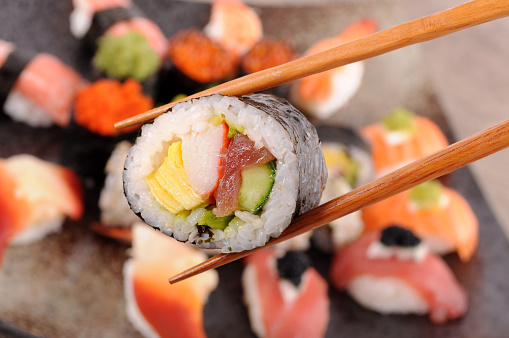
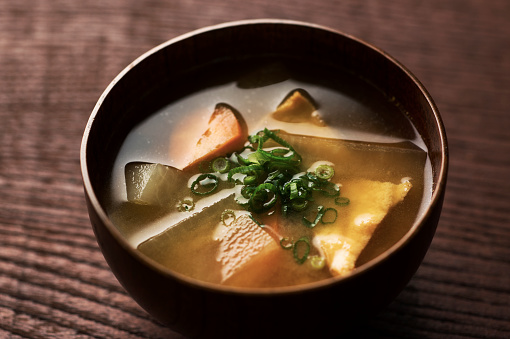
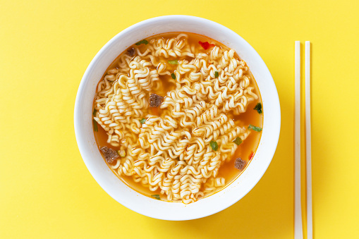

|  |
Sushi Valdiviano Es un plato típico de origen japonés basado en arroz aderezado con vinagre de arroz, azúcar y sal y combinado con otros ingredientes como pescados crudos, mariscos, verduras, etc.345 Este plato es uno de los más reconocidos de la gastronomía japonesa y uno de los más populares internacionalmente. Precio: $5.000 |
|  |
Sopa Miso de Corral Es una sopa japonesa preparada a base de un caldo dashi y pasta de miso, que le da nombre. Tiene diferentes ingredientes y preparaciones dependiendo la región y la temporada en que se haga. Además de la sopa suimono, es uno de los platos principales de la gastronomía de Japón Precio: $3.000 |
|  |
Ranco Ramen Es un plato de fideos japonés. Si bien cada región de Japón tiene su propia receta de ramen, la preparación básica consiste en distintos tipos de fideos japoneses servidos en un caldo preparado comúnmente a base de hueso de cerdo o pollo y distintas verduras, sus sabores varían entre la pasta de miso, salsa de soya [Shoyu] o sal [shio], contiene diferentes guarniciones como rebanadas de carne de cerdo (char siu - チャーシュ), algas (nori - 海苔), menma (メンマ) y cebolleta (negi - 葱). Precio: $6.000 |